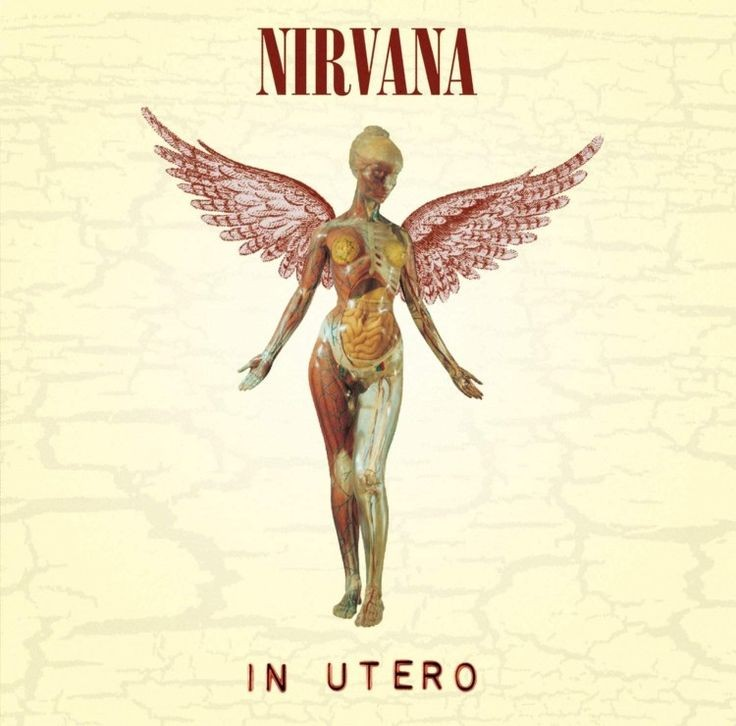
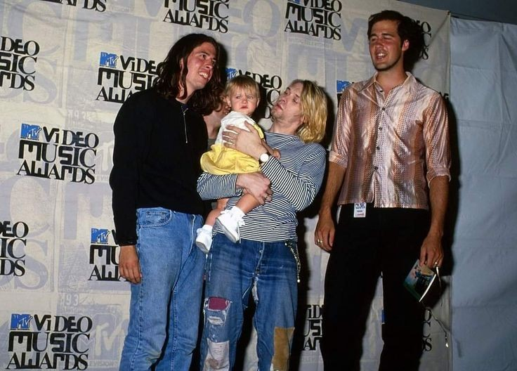

In Utero

| Track | Length |
|---|---|
| Serve the Servants | 3:36 |
| Scentless Apprentice | 3:48 |
| Heart-Shaped Box | 4:41 |
| Rape Me | 2:49 |
| Frances Farmer Will Have Her Revenge on Seattle | 4:10 |
| Dumb | 2:32 |
| Very Ape | 1:55 |
| Milk It | 3:55 |
| Pennyroyal Tea | 3:37 |
| Radio Friendly Unit Shifter | 4:51 |
| Tourette's | 1:35 |
| All Apologies | 3:51 |
After the release of Nevermind in September 1991, Nirvana experienced an explosive rise to fame, with Smells Like Teen Spirit becoming a cultural phenomenon. By early 1992, the album had reached No. 1 on the Billboard 200, but the band, especially Kurt Cobain, struggled with the sudden mainstream attention. Cobain resented being labeled as the "voice of a generation" and grew increasingly disillusioned with the music industry. At the same time, his heroin use worsened, partly due to chronic stomach pain and his difficulty coping with fame. In February 1992, he married Courtney Love in Hawaii, and later that year, their daughter, Frances Bean Cobain, was born.
Despite their success, 1992 was a turbulent year for the band. They refused to participate in major tours like Lollapalooza, leading to tensions with their management and label. Instead of recording a new studio album, they released Incesticide, a compilation of B-sides and rarities, to maintain momentum. Throughout the year, internal struggles grew, as Cobain’s drug use and erratic behavior strained his relationships with bassist Krist Novoselic and drummer Dave Grohl. By 1993, Nirvana was under pressure to follow up Nevermind, but Cobain was determined to make an album that was rawer and less commercial.
In early 1993, Nirvana chose producer Steve Albini to record their next album, hoping to capture a more abrasive, lo-fi sound that contrasted with the polished production of Nevermind. They recorded In Utero over two weeks in February at Pachyderm Studio in Minnesota. The sessions were intense but efficient, with Albini giving the band near-total creative control. However, after the recording was completed, Nirvana faced pushback from their label, DGC Records, which feared the album’s raw, unpolished sound would be commercially unviable. This led to some minor remixing of tracks like Heart-Shaped Box and All Apologies by Scott Litt. Despite the tensions, In Utero was released in September 1993, marking a stark departure from Nevermind and signaling Cobain’s increasing frustration with fame and the industry.

In Utero was Nirvana’s raw, unfiltered response to the overwhelming success of Nevermind and Kurt Cobain’s growing disillusionment with fame. Deliberately abrasive and less polished, the album rejected mainstream expectations, embracing a harsher, more emotional sound that reflected Cobain’s inner turmoil. Lyrically, it explored themes of pain, alienation, and frustration, making it a stark contrast to the more accessible grunge anthems of their previous record. Despite initial concerns from their label, In Utero was both a critical and commercial success, solidifying Nirvana’s legacy while showcasing their unwillingness to conform. It remains one of the most influential albums of the 1990s, a powerful statement of artistic integrity and emotional honesty.